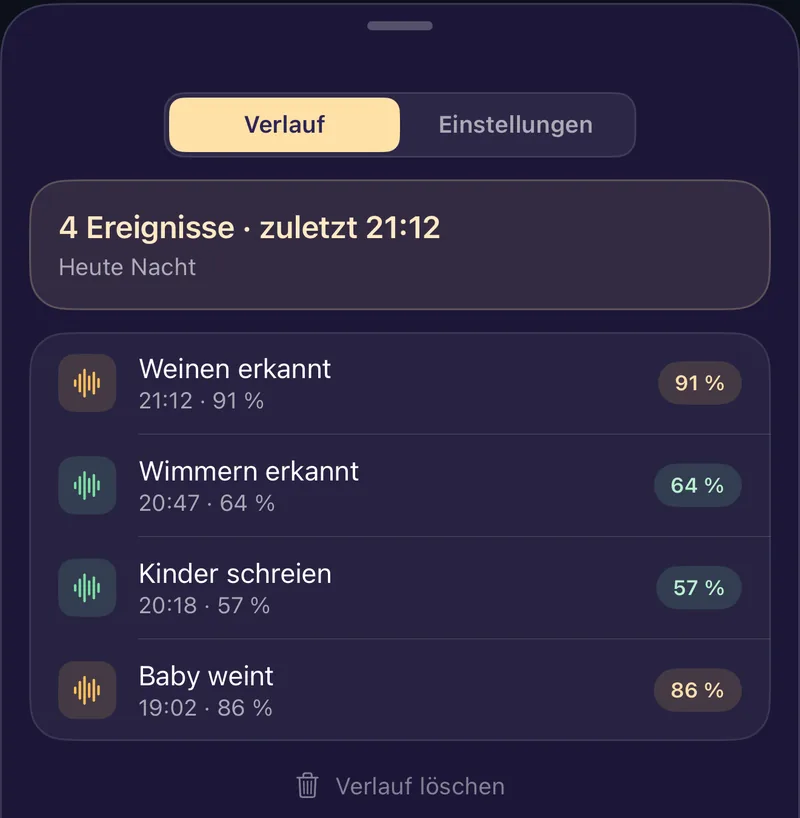
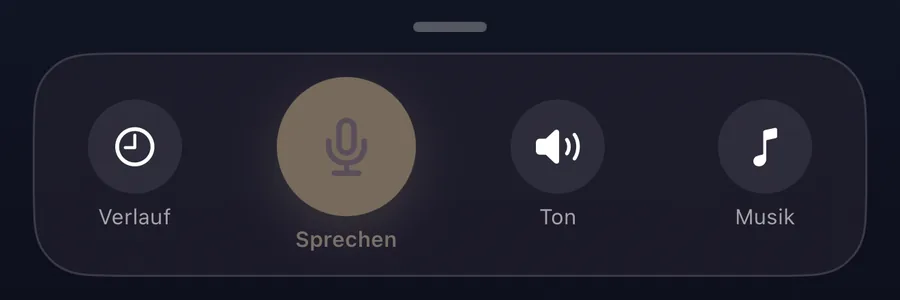

Babyphone App. Nur du schaust zu.
LaLeLu macht iPhone, iPad und Mac zum privaten Babyphone mit Kamera. Kostenlos, ohne Abo, ohne Konto. Ende-zu-Ende verschlüsselt.
Für iPhone, iPad und Mac. Zwei Apple-Geräte nötig.

- 0 € – kostenlos
- Kein Abo
- Kein Konto
- Keine Werbung
- Kein Tracking
Babyphone mit Kamera.
Alles kostenlos.
Ein Gerät bleibt als Baby-Einheit im Kinderzimmer, das andere wird zur Eltern-Einheit. iPhone, iPad und Mac lassen sich frei kombinieren.
- Live-Video und TonIm WLAN und unterwegs über Mobilfunk.
- NachtsichtDer Bildschirm der Baby-Einheit wird zur Lampe.
- Weinen-Alarm auf dem GerätAls Push, auch bei gesperrtem Bildschirm.
- GegensprechenPer Push-to-Talk, ohne aufzustehen.
- Einschlafklänge mit TimerRauschen, Regen und Meer.
- Aktivitäts-VerlaufBleibt lokal auf deinem Gerät.
Licht aus.
Nachtsicht an.
Die Baby-Einheit bleibt im dunklen Kinderzimmer. Im Nachtmodus ist ihr Bildschirm fast schwarz, die Übertragung läuft weiter.
Mit Nachtsicht wird ihr Bildschirm zur sanften Lampe, rot oder weiß. Rotes Licht stört den Schlaf erfahrungsgemäß weniger.
Ein- und ausschalten kannst du die Nachtsicht auch vom iPhone aus, ohne ins Zimmer zu gehen.


Weint dein Baby,
weiß es dein iPhone.
Die Weinen-Erkennung läuft komplett auf der Baby-Einheit, mit Apples SoundAnalysis. Hört sie Weinen oder Husten, kommt eine Push-Mitteilung, auch bei gesperrtem Bildschirm. Kein Audio geht dafür in die Cloud.

Ein leises Wort.
Ohne aufzustehen.
Halte „Sprechen“ gedrückt, und deine Stimme ist im Kinderzimmer. Loslassen, und es ist wieder still.

Probier es: Halte „Sprechen“ gedrückt.
Rauschen an.
Timer läuft.
Weißes, rosa und braunes Rauschen, dazu Regen und Meer. Du startest die Klänge bequem vom iPhone aus.
Der Timer läuft auf der Baby-Einheit selbst und blendet den Klang sanft aus, auch wenn dein iPhone zwischendurch die Verbindung verliert.
Wähle 15, 30, 45 oder 60 Minuten, oder ohne Ende.
Dein alter Mac hat
einen neuen Job.
Stell ihn ins Kinderzimmer: Mit eingebauter oder angeschlossener Kamera wird er zur Baby-Einheit. Dein iPhone ist die Eltern-Einheit.


1–2 SekundenSo schnell steht die Verbindung zuhause meist. Unterwegs über Mobilfunk oft in wenigen Sekunden.
Frei kombinierbariPhone, iPad oder Mac im Kinderzimmer, iPhone oder iPad bei dir. Ein altes iPhone reicht als Baby-Einheit.
Für beide ElternMehrere Eltern-Geräte können gleichzeitig verbunden sein. Mehr im Ratgeber: Mac als Babyphone.
Babyphone Datenschutz:
Niemand schaut mit.
- Ende-zu-Ende verschlüsselt.
- Bild und Ton laufen direkt zwischen deinen Geräten (WebRTC, DTLS-SRTP). Nur die Geräte, die du selbst gekoppelt hast, sehen das Bild.
- Keine Aufzeichnung.
- Video und Ton werden weder auf einem Server noch dauerhaft in der App gespeichert.
- Erkennung auf dem Gerät.
- Die Geräusch-Analyse passiert lokal mit Apple SoundAnalysis. Es wird kein Audio an uns geschickt.
- Kein Konto, keine Werbung, kein Tracking.
- Für die Kopplung reicht dein vorhandener iCloud-Zugang.
Ehrlich gesagt: Zur Vermittlung von Verbindung und Alarm nutzt LaLeLu Apple (iCloud, Push) und Cloudflare. Was dabei wie lange gespeichert wird, steht vollständig in der Datenschutzerklärung.
Babyphone ohne Abo und ohne Konto: der Vergleich
Viele Babyphone-Apps verlangen ein Abo, einen Einmalkauf pro Gerät oder ein eigenes Konto. LaLeLu nicht.
| Kriterium | LaLeLu | Typische Babyphone-Apps |
|---|---|---|
| Preis | 0 €, für alle Geräte | oft Abo oder Kauf je Plattform |
| Konto / Registrierung | Keines, nur dein vorhandener iCloud-Zugang für die Kopplung | häufig eigenes Konto nötig |
| Werbung und Tracking | Keine Werbung, keine Tracking-SDKs | teils Werbung oder Analyse-Dienste |
| Video und Ton | Ende-zu-Ende verschlüsselt, nie aufgezeichnet | teils über Cloud-Server gespeichert oder verarbeitet |
| Weinen-Erkennung | Auf dem Gerät, kein Audio in die Cloud | teils nur Lautstärke-Schwelle oder Cloud-Analyse |
| Geräte | iPhone, iPad und Mac frei kombinierbar | oft nur eine Plattform |
Der Vergleich beschreibt allgemeine Marktunterschiede, keine einzelne App.
In wenigen Minuten eingerichtet
- Laden.LaLeLu auf beiden Geräten aus dem App Store laden.
- Wählen.Auf dem Gerät im Kinderzimmer „Baby-Einheit“ wählen, auf dem anderen „Eltern-Einheit“.
- Koppeln.Per Link oder QR-Code koppeln. Fertig.
Häufige Fragen zur Babyphone App
Ist die Babyphone App wirklich kostenlos und ohne Abo?
Ja. LaLeLu ist ein kostenloses Babyphone ohne Abo, ohne In-App-Käufe-Zwang und ohne Werbung. Es gibt keine Testphase, die ausläuft, und keine Funktion hinter einer Bezahlschranke.
Brauche ich ein Konto, um LaLeLu zu nutzen?
Nein. LaLeLu hat kein eigenes Konto und keine Registrierung. Für die einmalige Kopplung der beiden Geräte nutzt die App deinen bestehenden Apple-iCloud-Zugang, den du auf deinem iPhone, iPad oder Mac ohnehin hast.
Wird Video oder Ton aufgezeichnet oder gespeichert?
Nein. Bild und Ton werden live Ende-zu-Ende verschlüsselt (WebRTC, DTLS-SRTP) direkt zwischen deinen Geräten übertragen und weder auf einem Server noch in der App aufgezeichnet. Ist keine direkte Verbindung möglich, läuft der weiterhin verschlüsselte Datenstrom über ein Relay von Cloudflare, das ihn nicht entschlüsseln kann.
Welche Geräte brauche ich für das Babyphone mit Kamera?
Zwei Apple-Geräte: ein Gerät bleibt als Baby-Einheit im Kinderzimmer (iPhone, iPad oder Mac mit Kamera und Mikrofon), das andere ist die Eltern-Einheit (iPhone oder iPad). Ein altes iPhone reicht als Baby-Einheit. Android wird nicht unterstützt.
Kann ich meinen Mac als Babyphone nutzen?
Ja. Die Mac-App funktioniert als Baby-Einheit mit der eingebauten oder einer angeschlossenen Kamera und dem Mikrofon. Sie steht im Kinderzimmer, dein iPhone ist die Eltern-Einheit.
Funktioniert das Babyphone auch unterwegs über Mobilfunk?
Ja. Die Verbindung klappt im selben WLAN und auch über Mobilfunk oder fremde Netze. Beide Geräte brauchen dafür eine Internetverbindung. Zuhause steht die Verbindung meist in ein bis zwei Sekunden, unterwegs oft in wenigen Sekunden.
Wie funktioniert die Weinen-Erkennung?
Die Geräuscherkennung läuft vollständig auf dem Baby-Gerät, mit Apples SoundAnalysis. Es wird kein Audio zur Analyse in die Cloud geschickt und nichts zu Trainingszwecken gesammelt. Erkennt die App z. B. Weinen oder Husten, bekommst du eine Mitteilung.
Bekomme ich den Alarm auch, wenn das iPhone gesperrt ist?
Ja. Der Alarm kommt als Push-Mitteilung auch bei gesperrtem Bildschirm. Erlaube dafür in den iPhone-Einstellungen Mitteilungen für LaLeLu.
Wie koppele ich Baby- und Eltern-Einheit?
Auf dem Baby-Gerät erzeugst du einen Kopplungs-Link oder QR-Code, den du mit dem Eltern-Gerät öffnest oder scannst. Das dauert wenige Minuten. Der Link ist der Schlüssel zur Kopplung: Gib ihn nur an Menschen weiter, denen du vertraust.
Können mehrere Eltern-Geräte gleichzeitig verbunden sein?
Ja. Mehrere Eltern-Geräte können gleichzeitig verbunden sein, damit beide Elternteile informiert bleiben, auch mit unterschiedlichen Apple-IDs.
Hilfe & Support
Fragen, Rückmeldungen oder Hilfe? Schreib direkt an den Entwickler — es antwortet ein Mensch: moritz.wolf@a1.net. In der App findest du außerdem „Problem melden / Feedback“.
Dein Babyphone ist schon in der Tasche.
Lade LaLeLu kostenlos und richte dein privates Babyphone in wenigen Minuten ein.
Kostenlos im App Store laden